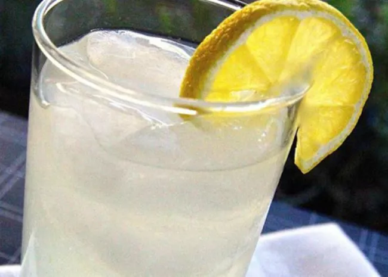

Tom collins cocktail

This Tom Collins recipe makes the classic gin cocktail that was created in the late 1800s and is said to have been named after a widespread practical joke that swept the country. This cocktail, however, is no joke.